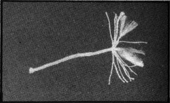
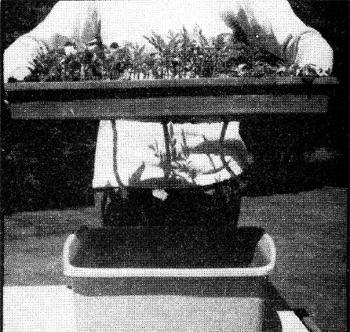

Growing plants indoors can be a pain but not at my house, now that a few suggestions passed on to me by a professional have taken a lot of the worry and work out of this project. As a result, I grow lettuce all winter and do nothing more than plant and harvest. No watering, no daily inspection of soil, no anything except fresh greens when others are picking over the tired grocery variety. In the spring, my mini garden is converted to a plant starter for the outdoor patch. Once again, the Sow and Forget Method makes the job easy and trouble-free, with fantastic results.
The basic tool behind the Sow and Forget Method is a supply of wicking. This isn't easy to find, but is certainly worth looking for and lasts for years once you have it.
The wicking I use looks like ordinary sash rope but is made of fiberglass. (There may be other types I'm not familiar with, so I'm open to feedback,) Apparently this handy material is so little known that few garden stores stock it. The only outlet I've found here in Cincinnati is the Garden Center, which buys the wicking wholesale in rolls and sells it by the foot as a non-profit service to garden club members and area residents.
You'll also find wicking listed on the back page of Melinger's Garden Catalog, 2310 West South Range Road, North Lima, Ohio 44452. The product sold by that firm is primarily designed for watering potted plants, but could probably be adapted to flats. Perhaps MOTHER'S General Store could include a roll of wicking on one of her shelves.
The beautiful thing about this indoor gardening aid is that it eliminates all concern about how much water to give young plants. The wick delivers exactly the right amount of moisture at all times automatically. Here with thanks to the professional who taught me is how to use wicking effectively.
Cut the cord into lengths of approximately 10 inches and fray about three inches of one end. Then poke a hole in the bottom of your planting container, feed the unfrayed end through from inside, and spread the raveled portion to cover as much as possible of the pan's surface. Finally, dump in the potting soil.
How many wicks to use depends on the size of the container. I insert three if I'm planting a standard 11" X 21" flat, and four for a plastic dishpan lettuce bed. That may be more than necessary in the second case, but the moisture does have to be drawn through five or six inches of soil and I want to make sure there'll be plenty. There is, and the crop flourishes. I suppose the best rule to follow is to cover at least three-fourths of the container's bottom with frayed wicking. This will assure every plant of easy access to water.
The unfrayed ends of the wicks will be left dangling about five or six inches below your flat or planting container. Fill a second vessel with water (I use plastic dishpans for this too A and place the flat or lettuce bed right on top. Make certain the cords have more than just their tips hanging in the liquid. The farther down they hang, the less you have to be concerned about replenishing water in the reservoir.
The soil which is so efficiently moistened by my wicking consists of equal parts of peat moss, leaf mulch, and topsoil. This mixture is fed to my earthworm colony for several months to give the little critters time to work their fertilizing magic. I've been told that a poorer grade of earth is better for starting seedlings because it forces them to root out more. get healthy plants that make the trip to the garden with hardly a complaint, however, so I'm happy with my own formula.
According to my professional advisor, milled sphagnum moss used as a planting medium provides seeds with near perfect conditions for germination. The product is easily obtained from any garden store or through the mail from most seed companies. You don't need a great deal of the sphagnum moss a five pound sack will last me several seasons. To use the planting medium, soak it in water and spread a thin layer over the potting soil in the container. Scatter the seeds and cover them with another thin layer of moss. This tucks the future plants into a moist, sterile blanket.
Why sterile? You'll know if you've ever lost a planting from damping off. This fungus disease which attacks young plants and causes them to rot at the root-is much less likely to occur when a sterile medium is used.
If you don't want to spend the money for milled sphagnum moss, you can sterilize your own potting mixture. Just put the earth in a container about four or five inches deep and bury a small potato in the middle. Stick it in an oven at 2000 Farh and when the potato is done, the soil will be sterile,
Once I have my container planted, it goes under lights. I use two fluorescent fixtures, four feet in length, each holding twit bulbs one grow light and one regular fluorescent tube. Vegetables, and most flowers, don't need total grow light if lumination and the use of a standard bulb saves money. I find that this setup will take four flats or four lettuce beds, which is plenty for my needs,
There you have it: good eating all winter and an almost guaranteed, trouble-free method of raising plants come spring. Move over, Ruth Stout!?.
|
 |
 |
|